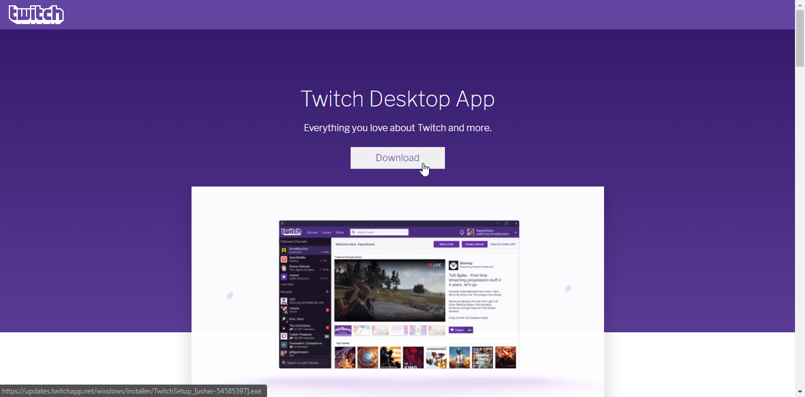
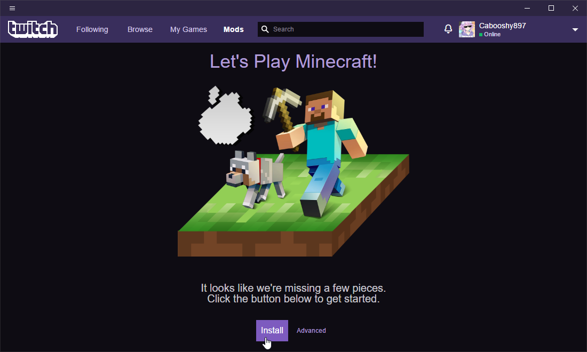
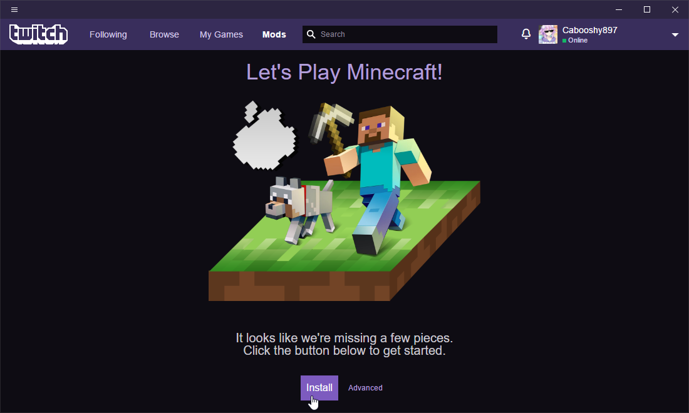
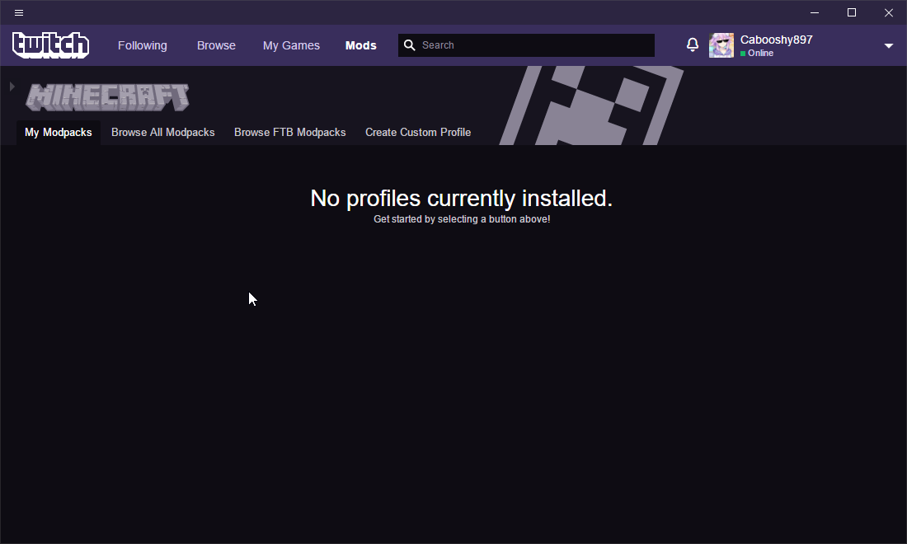
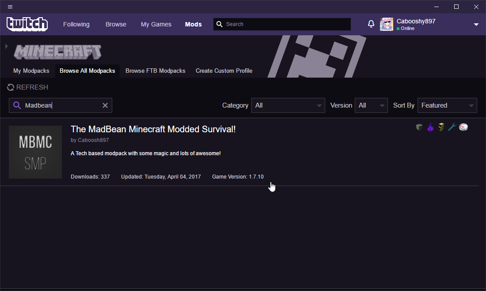
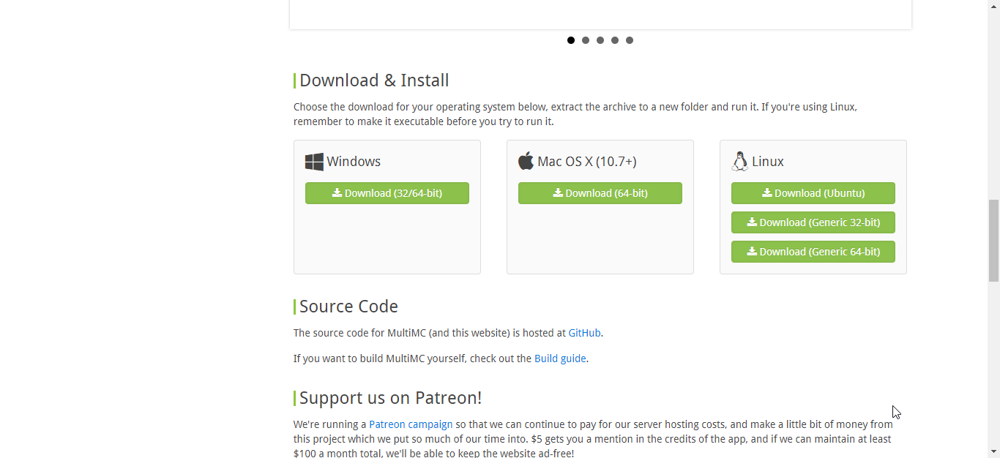
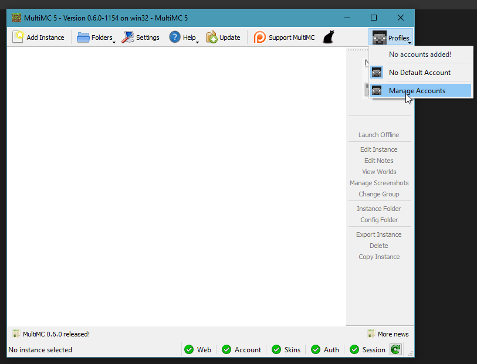
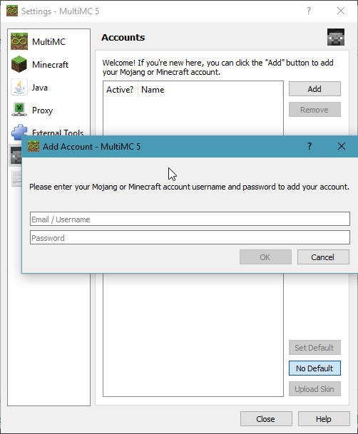
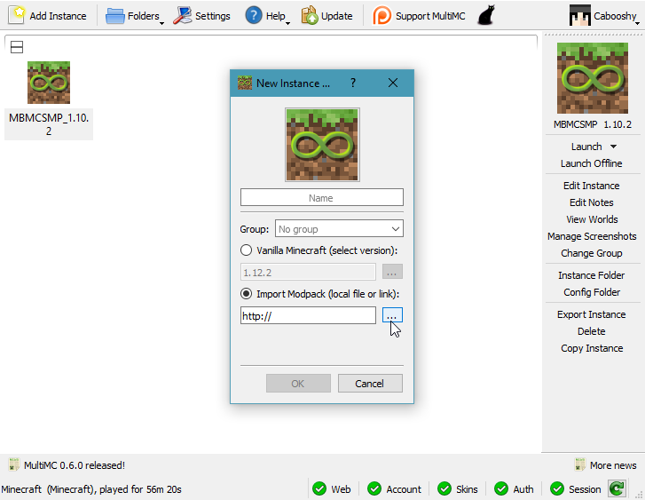

The Manual Way
Downloading The Twitch App
Okay, first things first, we need to do some setup, let's get the Twitch App Downloaded: Click me  Click next through the installer, Twitch don't have any offers or any of that shit in the installer, so it is safe to rapid fire click next. Then login to your Twitch or Curse account if you haven't merged it already.
Setting up Minecraft
Now we have the Twitch app installed, we can download the pack, head over to the Mods tab and click Minecraft:
 For you FTB players, this is how you get your FTB packs aswell, once you click minecraft (assuming its the first time) this screen will appear, hit install and it will install Minecraft, it should take maximum a couple of minutes:

For you FTB players, this is how you get your FTB packs aswell, once you click minecraft (assuming its the first time) this screen will appear, hit install and it will install Minecraft, it should take maximum a couple of minutes:

Downloading the Pack
Once Minecraft is installed, this is the screen that should greet you (once again, assuming this is the first time using the app):  Click on "Browse All Modpacks". This is the area where we can search for a pack of our choosing, in this case our modpack, simply search "Madbean" and it should be the only listing there and hit install (its over the modpack logo, for some reason its not shown on the screengrab), it will start downloading the modpack:  From here you can import the downloaded mods into your launcher of choice along with anything else you might need.
Back to the top
Using MultiMC
(Recommended if Twitch refuses to launch the pack, as it has done in the past, and is great for anything else)
Downloading MultiMC
So, to start off, lets get MultiMC downloaded, there is no install, it comes zipped up for convenience: Click me.
Don't forget to choose the appropriate version for your system.
 Click next through the setup and change anything you feel necessary to, as it is downloaded as a zip you can basically install it anywhere, i prefer to have it on the desktop for easy access.
Next, we need to setup our account, so go to the top right and click manage accounts, then press add and login to your account (MultiMC requires a Premium Account, so if you are a cracked player feel free to use the twitch app to download it or nab it from the curseforge download on the downloads page):  
Downloading the Pack (MultiMC)
Here is the Modpack Download Link: Download
Importing the Modpack
Now we have our account setup, we can import the modpack, hit the new instance button in the top left, then choose the import modpack option and browse to where you saved the pack:  Now you can if you need to go into the edit instance section and adjust how much ram you want to run the pack with, a good sweetspot is around the 3-4gb mark.
Connecting to the Server
So, you now have the pack downloaded, the game is running, but there is one important thing missing, (if you download via curseforge) The Server IP! so head to multiplayer, add a server, Name it something like MBMCSMP or Madbean Modded SMP, and add the ip, which is: mbmc.moddedsmp.net
you can now connect to the server and register on the server! the registration is to add an extra layer of security to your account, as the server will be an offline mode server in the future, the adavntage of using FlexibleLogin is it has a 2FA option, so you can keep logins restricted to just you (or whoever has your phone)